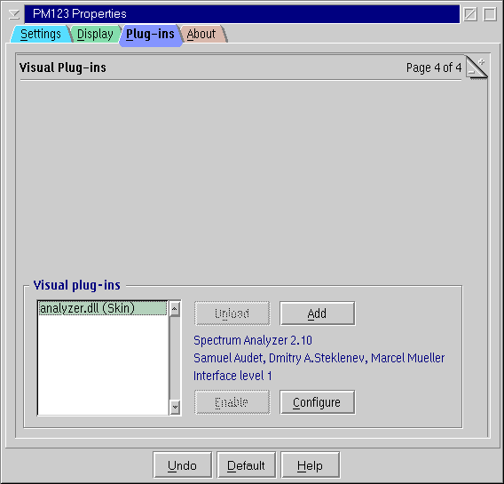

PM123's Visual Plug-ins Configuration

Visual plug-in list
Select a visual plug-in from the list to view
additional information and manipulate the plug-in.
Some visual plug-ins are skin specific. You cannot load or unload them
here. See PM123 sound visualization.
Buttons
- Unload
- Unloads the currently selected plug-in completely.
- Add
- Add a plug-in DLL.
- Enable / Disable
- Enables/disables the selected plug-in.
- Configure
- Available only if the plug-in is configurable. Click this button
to set plug-in's settings.
Double-click a plug-in from the list box aside has the same effect.